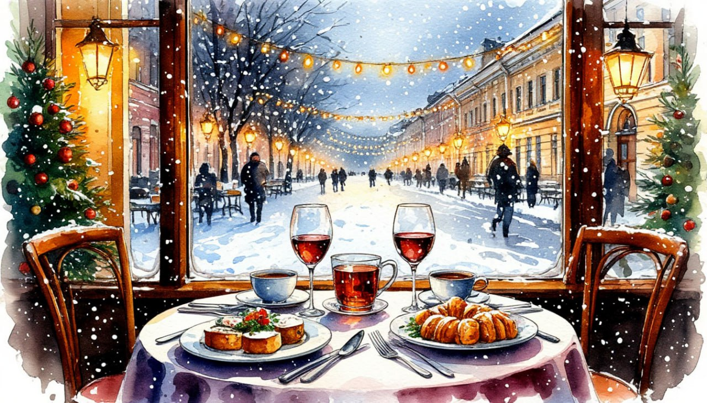

Императорское Рождество

Даты тура:
с 5 января 2027 года (вт) по 9 января 2027 года (сб)
Стоимость тура:
- 26 000 р. - взрослый
- 25 800 р. - пенсионеры/студенты/школьники
- 31 000 р./чел - одноместное размещение
- - Обзорная экскурсия «Новогодний Санкт-Петербург»
- - Территория Петропавловской крепости.
- - Посещение Николо-Богоявленского морского и Смольного соборов
- - Экскурсия в Большой Петергофский дворец
- - Экскурсия «Современный Санкт-Петербург»
- - Кронштадт (Морской Никольский Собор, Якорная площадь, Аллея Адмиралов, Парк Остров Фортов)
- - Вечерняя экскурсия «Мистерия новогоднего Петербурга: Легенды, тайны и мифы» с посещением Новогодней ярмарки (за доп.плату)
- - Экскурсия в Юсуповский дворец (за доп. плату)
- - Экскурсия в Музей военно-морской славы РФ (за доп. плату)
1 день: Отправление
- 17-00- выезд из Костромы от ТРЦ "РИО"
2 день: Санкт-Петербург
- Прибытие в Санкт-Петербург.
- Завтрак в кафе города.
- Обзорная автобусная экскурсия «Новогодний Санкт-Петербург». Приглашаем вас окунуться в зимнюю петербургскую сказку! Наше путешествие начнется с обзорной экскурсии по праздничному городу, который в новогодние дни преображается до неузнаваемости. Сияние гирлянд и праздничные украшения превращают улицы в декорации к волшебному фильму. В нашем путешествии вы перенесётесь в прошлое и узнаете, как встречали Новый год в эпоху Петра I и в последующие времена, а также раскроете секреты самых любимых рождественских традиций петербуржцев.
- Маршрут охватит главные жемчужины города: Невский проспект, Дворцовую и Исаакиевскую площади, Стрелку Васильевского острова, Сфинксов, Меншиковский дворец, Зимний дворец, храм Спас-на-Крови и многое другое
- Прогулка по территории Петропавловской крепости под полуденный выстрел из пушки
- Петербургской традицией является полуденный выстрел сигнального орудия с Нарышкина бастиона Петропавловской крепости.
- Особое место в программе займет посещение величественного Казанского собора с его знаменитой новогодней елью.
- Посещение Николо-Богоявленского морского собора, который навсегда вошел в историю как духовный центр моряков Российского императорского флота и святыня Гвардейского экипажа, под покровительством которой поколения военных моряков отправлялись в дальние походы.
- Посещение Смольного собора — эталон елизаветинского барокко, сочетающий в себе амбициозные архитектурные планы и интригующую магию чисел.
- Обед
- Заселение в отель. Свободное время
За дополнительную плату (по желанию) СТРОГО ПРИ БРОНИРОВАНИИ ТУРА:
- 19:00 Вечерняя автобусная экскурсия «Мистерия новогоднего Петербурга. Легенды, тайны и мифы» с посещением Новогодней ярмарки на Манежной площади. Стоимость: 1 100 р./чел (все категории)
- Новогодний Петербург — это не только праздничная иллюминация, но и город, пропитанный мистикой. Здесь каждый уголок хранит отголоски древних мифов о зимних праздниках и загадочные сказания, связанные с днем зимнего солнцестояния.
- Приглашаем вас на прогулку по самой уютной новогодней ярмарке! Мы будем кататься на каруселях, выбирать авторские игрушки на елку и рассматривать милые вещицы ручной работы — от теплых варежек до памятных сувениров с духом Петербурга. Здесь особенное настроение: повсюду слышна музыка, пахнет имбирными пряниками и горячим глинтвейном. Обязательно возьмем с собой фотоаппараты — локации для праздничных снимков здесь просто волшебные!
3 день: Санкт-Петербург
- Завтрак в отеле «шведский стол»
- Отправление на экскурсию «Современный Санкт-Петербург»
- Откройте для себя новую сторону Северной столицы. «Севкабель Порт» и культурный квартал «Брусницын» — средоточие молодёжи и современных пространств. Вы окажитесь лицом к лицу с невероятной "Газпром Ареной", пройдетесь по Парку имени 300-летия Санкт-Петербурга, встретите самый высокий небоскреб в Европе – Лахта центр.
- За дополнительную плату (по желанию) СТРОГО ПРИ БРОНИРОВАНИИ ТУРА:
- - Экскурсия в Юсуповский дворец.
- На набережной Мойки стоит Юсуповский дворец — здание, где каждый уголок хранит тайны и следы былого величия. В 1830 году князь Борис Юсупов выложил за него целое состояние (в пересчете на современные деньги — около 125 миллиардов рублей). Юсуповы были сказочно богаты: им принадлежало 57 усадеб по всей стране, а их петербургские дворцы по роскоши не уступали царским. Однако мировую известность особняку принесло не только богатство, но и драматические события декабря 1916 года, когда в его подвалах Феликс Юсупов расправился с Григорием Распутиным.
- Стоимость: 1 300 руб./чел. (все категории)
- Свободное время в городе
4 день: Петергоф
- Завтрак в отеле «шведский стол». Выезд на экскурсию с вещами
- Отправление в Петергоф
- Прогулка в Нижнем парке Петергофа
- Зимой Нижний парк — это совсем другой Петергоф: без бегущей воды и толп туристов, зато с тишиной, снегом и неожиданно отчётливой архитектурой. Фонтаны законсервированы, часть скульптур укрыта защитными коробами, но Большой каскад и «Самсон» остаются открытыми — золоченые статуи на белом снегу выглядят потрясающе.
- Экскурсия в Большой Петергофский дворец
- Большой Петергофский дворец — парадная загородная резиденция российских императоров, выстроенная по приказу Петра I и перестроенная в елизаветинскую эпоху Растрелли в стиле барокко, с тремястами метрами фасада, увенчанного золочёными куполами и скульптурами, возвышающегося над Большим каскадом
- Отправление в Кронштадт
- Кронштадт – город, в которых многое произошло в истории впервые: построен первый в России сухой док, проведена первая в России операция на сердце в морском госпитале, впервые применено хлорирование воды, здесь же прошли первые испытания подводных лодок, и другие интересные события.
- Во время экскурсии мы посетим Морской Никольский собор, Якорную площадь, Аллею Адмиралов, а также грандиозный проект «Парк Остров Фортов».
-
За дополнительную плату (по желанию) СТРОГО ПРИ БРОНИРОВАНИИ ТУРА:
- Экскурсия в Музей военно-морской славы РФ. - В парке «Острове фортов» работает Музей военно-морской славы — высокотехнологичное пространство, посвященное истории российского флота. Посетители могут проследить эволюцию морского дела от парусников до атомных субмарин.
- Главная «фишка» музея — подлинная атомная подлодка К-3 «Ленинский комсомол», установленная прямо в павильоне. Погружение в историю происходит через иммерсивные технологии: здесь есть интерактивные панорамы и симуляторы управления техникой.
- Стоимость: 800 руб./чел. – взрослые; 500 руб./чел. – пенсионеры, дети до 18 лет.
- Обед в кафе города.
- Выезд из города
5 день: Прибытие домой
Прибытие в Кострому в первой половине дня (ориентировочно)
- - проживание в гостинице*
- * Cosmos Saint-Petersburg Pribaltiyskaya Hotel 4* (Номер реестровой записи: С782024022202)
- - питание: 3 завтрака + 2 обеда
- - услуги гида-экскурсовода
- - экскурсионная программа
- - автобусное обслуживание по программе тура
Дополнительно оплачиваются (по желанию) СТРОГО ПРИ БРОНИРОВАНИИ ТУРА :
- - Вечерняя экскурсия по Санкт-Петербургу «Мистерия новогоднего Петербурга. Легенды, тайны и мифы» - 1 100 руб./чел. (все категории)
- - Экскурсия в Юсуповский дворец - 1 300 руб/чел (все категории)
- - Экскурсия в Музей военно-морской славы РФ. Стоимость: 800 руб - взрослый, 500 руб - пенсионеры/студенты/школьники
- Для бронирования необходимы данные паспорта РФ и свидетельства о рождении, если с вами путешествуют дети
- Предоплата – 50% от стоимости тура. Остаток за 30 дней до даты выезда.
- Любой тур можно оформить не выходя из дома. Подробнее: Тут
Стоимость тура не зафиксированы и могут быть изменены в большую или меньшую сторону в зависимости от уровня спроса в любой момент.
Время начала экскурсий и их порядок указано ориентировочно.
Фирма-исполнитель оставляет за собой право замены экскурсий без уменьшения общего объема экскурсионной программы.
По вопросам бронирования обращайтесь: